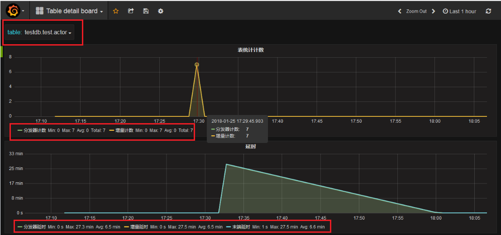

Mysql数据源接入DBus
原理：
同步mysql数据源是通过 canal 抽取程序读取binlog的方式获得增量数据， 通过从mysql 备库以分片的方式scan数据来获得全量数据，最后转换为UMS 输出到kafka 提供给下游数据使用方使用。
环境说明：
- 环境中有dbus-n1，dbus-n2，dbus-n3三个节点，canal安装在了dbus-n1，dbus-n2中
- mysql数据源的主备分别是dbmysql-master和dbmysql-slave两个节点
- mysql_instance实例安装在上述两个节点dbmysql-master和dbmysql-slave上
下面从 mysql_instance实例中的test 库的 actor和actor2 表为例，介绍如何配置mysql数据源。
配置中用到的基础环境的情况请参考基础组件安装
配置总共分为3个步骤：
- 数据库源端配置
- dbus一键加线
-
检验和查看结果
1 数据库源端配置
数据库源端配置只在第一次配置环境时需要，在以后的加表流程中不需要再配置。
此步骤中需要在mysql数据源的mysql_instance实例上创建一个名字为dbus的库，并在此库下创建表db_heartbeat_monitor和db_full_pull_requests两张表，用于心跳检测和全量拉取。
在数据源端新建的dbus库，可以实现无侵入方式接入多种数据源，业务系统无需任何修改，以无侵入性读取数据库系统的日志获得增量数据实时变化。
相关依赖部件说明：
| 名称 | 版本号 | 说明 |
|---|---|---|
| Canal | v1.0.22 | DBus用于实时抽取binlog日志。DBus修改一个1文件, 具体配置可参考canal相关支持说明，支持mysql5.6，5.7 |
| Mysql | v5.6，v5.7 | 存储DBus管理相关信息 |
限制：
- 被同步的Mysql blog需要是row模式
- 考虑到kafka的message大小不宜太大，目前设置的是最大10MB，因此不支持同步mysql MEDIUUMTEXT/MediumBlob和LongTEXT/LongBlob, 即如果表中有这样类型的数据会直接被替换为空。
1.1 dbus库和dbus账户配置
在mysql_instance实例上，创建dbus 库以及数据表db_full_pull_requests和db_heartbeat_monitor；创建dbus用户，并为其赋予相应权限。
a) 创建dbus库和dbus用户及相应权限
--- 1 创建库，库大小由dba制定(可以很小，就2张表）
create database dbus;
--- 2 创建用户，密码由dba制定
CREATE USER dbus IDENTIFIED BY 'your_password';
--- 3 授权dbus用户访问dbus自己的库
GRANT ALL ON dbus.* TO dbus@'%' IDENTIFIED BY 'your_password';
flush privileges;
b) 创建dbus库中需要包含的2张表，创建细节如下：
-- ----------------------------
-- Table structure for db_full_pull_requests
-- ----------------------------
DROP TABLE IF EXISTS `db_full_pull_requests`;
CREATE TABLE `db_full_pull_requests` (
`seqno` bigint(19) NOT NULL AUTO_INCREMENT,
`schema_name` varchar(64) DEFAULT NULL,
`table_name` varchar(64) NOT NULL,
`physical_tables` varchar(10240) DEFAULT NULL,
`scn_no` int(11) DEFAULT NULL,
`split_col` varchar(50) DEFAULT NULL,
`split_bounding_query` varchar(512) DEFAULT NULL,
`pull_target_cols` varchar(512) DEFAULT NULL,
`pull_req_create_time` timestamp(6) NOT NULL,
`pull_start_time` timestamp(6) NULL DEFAULT NULL,
`pull_end_time` timestamp(6) NULL DEFAULT NULL,
`pull_status` varchar(16) DEFAULT NULL,
`pull_remark` varchar(1024) DEFAULT NULL,
PRIMARY KEY (`seqno`)
) ENGINE=InnoDB AUTO_INCREMENT=1 DEFAULT CHARSET=utf8;
SET FOREIGN_KEY_CHECKS=0;
-- ----------------------------
-- Table structure for db_heartbeat_monitor
-- ----------------------------
DROP TABLE IF EXISTS `db_heartbeat_monitor`;
CREATE TABLE `db_heartbeat_monitor` (
`ID` bigint(19) NOT NULL AUTO_INCREMENT COMMENT '心跳表主键',
`DS_NAME` varchar(64) NOT NULL COMMENT '数据源名称',
`SCHEMA_NAME` varchar(64) NOT NULL COMMENT '用户名',
`TABLE_NAME` varchar(64) NOT NULL COMMENT '表名',
`PACKET` varchar(256) NOT NULL COMMENT '数据包',
`CREATE_TIME` datetime NOT NULL COMMENT '创建时间',
`UPDATE_TIME` datetime NOT NULL COMMENT '修改时间',
PRIMARY KEY (`ID`)
) ENGINE=InnoDB DEFAULT CHARSET=utf8;
SET FOREIGN_KEY_CHECKS=0;
c) dbus用户拉备库权限
获取拟拉取的目标表备库的读权限，用于初始化加载，schemaName1.tableName1是需要同步的表名：
-- GRANT select on schemaName1.tableName1 TO dbus;
GRANT select on test.t1 TO dbus;
GRANT select on test.t2 TO dbus;
flush privileges;
如上dbus库配置命令，详见https://github.com/BriData/DBus/tree/master/initScript下mysql insatall文件夹。
1.2 canal 账户和canal server配置
a) 在mysql数据源的mysql_instance实例中创建Canal用户，并授予相应权限：
--- 创建Canal用户，密码由dba指定, 此处为canal
CREATE USER canal IDENTIFIED BY 'canal';
--- 授权给Canal用户
GRANT SELECT, REPLICATION SLAVE, REPLICATION CLIENT ON *.* TO 'canal'@'%';
FLUSH PRIVILEGES;
b) Canal Server配置：
1). 下载Canal
从https://github.com/alibaba/canal/releases下载Canal，到目录/app/canal-testdb，并解压。详细情况参照https://github.com/alibaba/canal/wiki/QuickStart。注意canal要下载版本为canal-1.0.22。
详细情况请参考https://github.com/BriData/DBus/tree/master/third-party-packages/canal
2). 修改canal 配置文件
canal.properties文件配置：canal.properties文件在目录/app/canal-testdb/conf下
# 需要配置的项有：
#canal编号 标识canal server，需要不和其他canal server的id重复
canal.id = 1
#canal端口号 同一台机器上的不同canal server需要定义成port不同
canal.port = 11111
#值为zk的IP和端口，canal server在zk上的路径(为保持与Extractor配置中zk path一致，要在/DBus/Canal/目录下)
canal.zkServers=dbus-zk:2181/DBus/Canal/canal-testdb
# 关闭 dcl
canal.instance.filter.query.dcl = true
canal.instance.filter.query.dml = true
canal.instance.filter.query.ddl = false
canal.instance.filter.table.error = false
canal.instance.filter.rows = false
canal.instance.binlog.format = ROW
canal.instance.binlog.image = FULL
#canal.instance.global.spring.xml = classpath:spring/file-instance.xml
canal.instance.global.spring.xml = classpath:spring/default-instance.xml
instance.properties文件配置：
需要配置的项有：
canal.instance.mysql.slaveId = slaveId
#canal.instance.master.address = ip:port
canal.instance.master.address = dbmysql-slave:3306
# username/password，需要改成自己的数据库信息
canal.instance.dbUsername = xxxxx #此处为canal
canal.instance.dbPassword = xxxxx #此处为canal
3). 在zk中创建canal的结点
在dbus-web中ZK Manager中新建结点/DBus/Canal/canal-testdb：
注意此路径需要与canal.properties的canal.zkServers值匹配。
4). 启动canal server
到目录/app/canal-testdb/bin下，运行 sh startup.sh
5). 查看canal进程:
jps -l 后应当存在com.alibaba.otter.canal.deployer.CanalLauncher进程。并且启动成功后，会在dbus-web中ZK Manager中结点/DBus/Canal/canal-testdb（同上）生成一系列结点。
##为什么不支持呢
Dbus系统丢弃掉对大数据类型MEDIUMBLOB、LONGBLOB、LONGTEXT、MEDIUMTEXT等的支持，因为dbus系统假设最大的message大小为10MB，而这些类型的最大大小都超过了10MB大小。对canal源码的LogEventConvert.java进行了修改，而此文件打包在canal.parse-1.0.22.jar包中，因此在canal server包解压之后，需要按照替换解压后的canal目录中lib下的canal.parse-1.0.22.jar文件。
可用https://github.com/BriData/DBus/blob/master/third-party-packages/canal/canal.parse-1.0.22.jar替换上述原始jar包。
2 Dbus一键加线
Dbus对每个DataSource数据源配置一条数据线，当要添加新的datasource时，需要新添加一条数据线。下面对通过dbus web添加新数据线的步骤进行介绍
2.1 进入dbus web页面，点击New DataLine

2.2 填写数据源基本信息 （master和slave jdbc连接串信息）
其中dbmysql-master是mysql数据源主库，Dbus中用于接受心跳检测数据，以便监测数据表数据是否正常流转。dbmysql-slave是mysql数据源备库，用于全量拉取数据，以便降低对主库正常业务数据查询影响。

2.3 下拉选择要添加的schema，勾选要添加的表，点击next；

2.4 修改ZK配置
首先展开ZK节点，显示提示信息节点Not Existed，点击Clone ZkConf From Templates，修改ZK配置

刷新后如下图，不再显示Not Existed，ZK配置完成

2.5 启动Topology
在点击启动操作按钮之前请确保，storm服务器上面的/app/dbus/apache-storm-1.0.2/dbus_jars目录下，已经上传了最新的jar包。
然后分别点击dispatcher-appender、splitter-puller、extractor的启动按钮，系统则根据path路径自动执行相应 topology的shell脚本，启动成功后Status状态变为running。

新线部署完成
2.6 拉取增量和全量数据
新添加的数据线，其schema中的table处于abort状态。需要到dbus web中对相应的表，先拉取增量数据，才能让其变成OK状态。处于OK状态的表才会正常的从mysql数据源同步数据到相应的kafka中。拉取完成增量之后，可以根据业务需要确定是否需要拉取全量数据。

2.7 如果新加线过程中出现问题
如果新加线过程中出现问题时，可以先删除已经添加到一半的新线Datasource，然后再重新添加新线。

3 检验和查看结果
3.1 验证增量数据
a) 插入数据
向数据源的数据表中添加数据，检验效果。此处以testdb数据源的test数据库的表actor中添加数据为例，向此表插入几条数据之后，会看到kafka UI中相应的topic: testdb, testdb.test, testdb.test.result的offset均有所增加。也可以在grafana中查看数据流的情况。
如果数据源中添加的schema和数据表已经存在数据，点击dbus web中的拉增量和拉全量，将现有数据同步到kafka中。
b) grafana看增量流量
上述向数据表中添加完数据后，过大约几分钟，会在grafana中显示数据的处理情况。如下图中，两组则线图分别表示：计数和延时，正常情况下计数图中”分发计数器”和”增量计数器”两条线是重合的。在图左上角，选择要查看的数据表，此处为testdb.test.actor。上部的分发器计数图展示了此表的分发和增量程序接收到7条数据；下部的分发器延时展示分发延时、增量延时和末端延时情况。

3.2 验证全量拉取
验证全量拉取是否成功，可到Dbus web的zk manager下查看全量拉取状态。如下图中，选取zookeeper Manager中的/DBus/FullPuller下相应数据源、数据库与数据表中相应拉全量版本，查看结点信息。看结点信息中Status状态，其中splitting表示正在分片，pulling表示正在拉取，ending表示拉取成功。